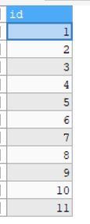
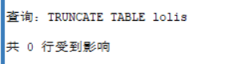
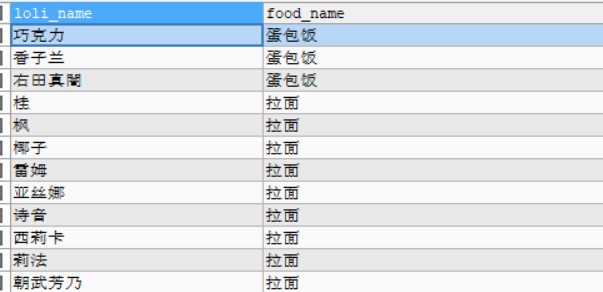
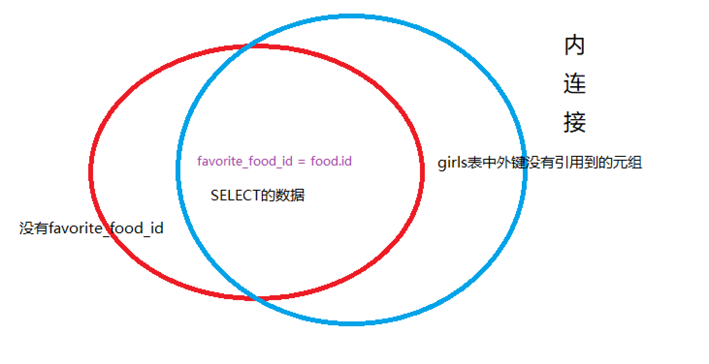
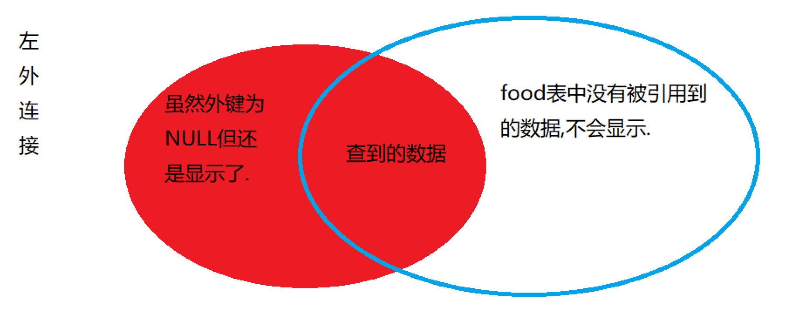
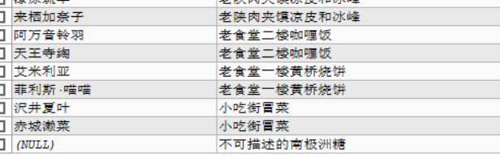

结构化查询语言(Structured Query Language)简称SQL,sql是用来操作关系型数据库的语言,ISO作为互联网的老大哥,同样也为sql定制了标准,但是并不是所有组织都会完全遵守老大哥的标准.MySQl数据库的语句照搬到SQL Server就可能出现错误,因此考虑代码移植和兼容真的是DBA(Database Administrator)们头疼的事情.
不过我们不用管那么多,本文是基于MySql的标准sql.
SQL分为很多种语言,DDL,DML,DCL,DQL,TCL共同组成数据库的完整语言。
sql语句必须以分号结尾
sql不区分关键字大小写(建议大写)
注释有三种
xxxxxxxxxx81-- 单行注释,注意这个前面要有空格2#单行注释3/*4 多5 行6 注7 释8*/SQL的代码风格是要求在DQL中每个关键字都独占一行,其他的无所谓.(按照我的写法就行了)
就是列,但是这个名字比较装逼
就是行,但是感觉没人用这个词.
也是行,就是元素组的意思.一行元素就是一个元素组.
数据库管理系统(Database Management System) 简称DBMS,就指的是MySQl,SqlServer那些数据库的软件.
为了更好演示sql语法,请粘贴以下代码到SQLyog,F9执行,到时候做演示使用.
xxxxxxxxxx901DROP DATABASE IF EXISTS TwoDimensions;2CREATE DATABASE IF NOT EXISTS TwoDimensions;3USE TwoDimensions;45CREATE TABLE food(6 id INT AUTO_INCREMENT PRIMARY KEY,7 food_name VARCHAR(20),8 price FLOAT9);1011CREATE TABLE girls(12 id INT AUTO_INCREMENT PRIMARY KEY,13 loli_name VARCHAR(20) UNIQUE,14 age INT NOT NULL,15 nature ENUM('傲娇','天然呆','病娇','三无','腹黑','元气','工口','温柔','高冷') DEFAULT '傲娇',16 favorite_food_id INT,17 CONSTRAINT fk_girls_food FOREIGN KEY(favorite_food_id) REFERENCES food(id)18);1920INSERT INTO food21VALUE (NULL,'蛋包饭',17.5),22 (NULL,'拉面',10),23 (NULL,'面硬加咸蔬菜加倍蒜末和油多多',24.7),24 (NULL,'咖啡',20),25 (NULL,'蛋糕',50),26 (NULL,'奶茶',7),27 (NULL,'鱼香肉丝',21.4),28 (NULL,'宫爆鸡丁',24.9),29 (NULL,'糖醋里脊',34),30 (NULL,'老陕肉夹馍凉皮和冰峰',30),31 (NULL,'老食堂二楼咖喱饭',13),32 (NULL,'老食堂一楼黄桥烧饼',8),33 (NULL,'小吃街冒菜',15.5),34 (NULL,'不可描述的南极洲糖',9999);3536 37INSERT INTO girls38VALUE (NULL,'巧克力',14,'元气',1),39 (NULL,'香子兰',19,'三无',1),40 (NULL,'桂',23,'工口',2),41 (NULL,'枫',23,'傲娇',2),42 (NULL,'红豆',14,'傲娇',8),43 (NULL,'椰子',19,'傲娇',2),44 (NULL,'艾米利亚',23,'傲娇',12),45 (NULL,'雷姆',18,'温柔',2),46 (NULL,'拉姆',18,'傲娇',6),47 (NULL,'亚丝娜',20,'温柔',2),48 (NULL,'诗音',17,'高冷',2),49 (NULL,'莉兹贝特',28,'傲娇',10),50 (NULL,'西莉卡',16,'傲娇',2),51 (NULL,'结衣',2,'傲娇',8),52 (NULL,'莉法',18,'傲娇',2),53 (NULL,'由纪',20,'傲娇',7),54 (NULL,'爱丽丝',18,'傲娇',9),55 (NULL,'朝武芳乃',19,'傲娇',NULL),56 (NULL,'常陆茉子',19,'傲娇',NULL),57 (NULL,'最可爱的小丛雨',300,'傲娇',8),58 (NULL,'蕾娜',20,'傲娇',4),59 (NULL,'鞍马小春',16,'傲娇',2),60 (NULL,'马庭芦花',23,'傲娇',7),61 (NULL,'绫地宁宁',18,'傲娇',3),62 (NULL,'因幡爱瑠',17,'傲娇',2),63 (NULL,'椎叶䌷',16,'傲娇',9),64 (NULL,'户隐憧子',20,'傲娇',10),65 (NULL,'仮屋和奏',19,'傲娇',2),66 (NULL,'沢井夏叶',7,'傲娇',13),67 (NULL,'有岛爱丽丝',16,'傲娇',6),68 (NULL,'栖美',18,'傲娇',2),69 (NULL,'八六',120,'温柔',NULL),70 (NULL,'右田日日姬',23,'傲娇',2),71 (NULL,'我老婆雏衣波莱特',26,'温柔',NULL),72 (NULL,'玲奈',70,'傲娇',5),73 (NULL,'右田真闇',26,'傲娇',1),74 (NULL,'宝生稀咲',22,'傲娇',8),75 (NULL,'蓑笠凪',13,'傲娇',9),76 (NULL,'早濑深美',14,'傲娇',7),77 (NULL,'牧濑红莉栖',23,'傲娇',6),78 (NULL,'椎名真由理',20,'天然呆',4),79 (NULL,'漆原琉华',21,'傲娇',10),80 (NULL,'阿万音铃羽',23,'傲娇',11),81 (NULL,'菲利斯·喵喵',12,'傲娇',12),82 (NULL,'天王寺绹',12,'傲娇',11),83 (NULL,'阿万音由季',20,'傲娇',9),84 (NULL,'高坂桐乃(陈睿叔叔)',18,'傲娇',7),85 (NULL,'田村麻奈实',19,'傲娇',6),86 (NULL,'槙岛沙织',19,'傲娇',5),87 (NULL,'五更琉璃',18,'傲娇',4),88 (NULL,'新垣绫濑',18,'病娇',8),89 (NULL,'来栖加奈子',15,'傲娇',10),90 (NULL,'赤城濑菜',19,'傲娇',13);这个是我写的一个二次元数据库,如果之后进行操作的时候把库删了,或者把数据搞的一塌糊涂的时候,可以粘过去重新建一个.
如果想查看这两个表是否建成,可以分别执行下面两个代码.
xxxxxxxxxx21SELECT * FROM food;2SELECT * FROM girls;
xxxxxxxxxx11USE <数据库名字>;xxxxxxxxxx11select database();
数据库模式定义语言(Data Definition Language),简称DDL,是用来定义创建数据库和表的语言
xxxxxxxxxx11CREATE DATABASE IF NOT EXISTS <数据库名称> ;xxxxxxxxxx11ALTER DATABASE <数据库名称> CHARACTER SET gbk; xxxxxxxxxx11DROP DATABASE IF EXISTS <数据库名称>;下面是一个最简单的表,其中前面是变量名,后面是类型,刚好和其他语言相反.
xxxxxxxxxx51CREATE TABLE lolis(2 loli_name VARCHAR(20),3 age INT,4 nature ENUM('傲娇','天然呆','病娇')5);就像上面那张表,sql的数据类型有很多种,
xxxxxxxxxx51TINYINT #(1BYTE)2SMALLINT #(2BYTE)3MEDIUMINT #(3BYTE)4INT #(4BYTE)5BIGINT #(8BYTE) 也可以在整数后面指定无符号型
xxxxxxxxxx11INT UNSIGNEDxxxxxxxxxx21FLOAT #(4BYTE)2DOUBLE #(8BYTE)xxxxxxxxxx21CHAR(最大长度)2VARCHAR(最大长度)这两种字符类型在使用前都必须指定最大长度,但是CHAR类型在数据没有填满的时候自动补充半角空格,而VARCHAR是可变长字符串,如果没有到达最大长度,那么它会自动缩小占用空间,但是也不能超过最大长度.
用ENUM声明
xxxxxxxxxx11ENUM('a','b','c')xxxxxxxxxx11DATE #格式：1999-12-24用于存放超级大的文章，小说什么的
xxxxxxxxxx11LONGTEXT
首先我把代码粘过来,好看:
xxxxxxxxxx81CREATE TABLE lolis(2 id INT PRIMARY KEY,3 loli_name VARCHAR(20) UNIQUE,4 age INT NOT NULL,5 nature ENUM('傲娇','天然呆','病娇') DEFAULT '傲娇',6 favorite_food_id INT,7 CONSTRAINT fk_lolis_food FOREIGN KEY(favorite_food_id) REFERENCES food(id)8);SQL有六大约束:
xxxxxxxxxx11age INT NOT NULL,xxxxxxxxxx11nature ENUM('傲娇','天然呆','病娇') DEFAULT '傲娇',xxxxxxxxxx11id INT PRIMARY KEY,xxxxxxxxxx11loli_name VARCHAR(20) UNIQUE,xxxxxxxxxx11gender CHAR(1) CHECK(gender='男' OR gender='女'),FOREIGN KEY 外键约束:比较复杂,指的是引用其他表的主键.比如说萝莉每人都有一个爱吃的食物吧,这个食物也有一个表,叫做食物表,这个表也有一个id,也是食物表的主键.那么这个主键就可以作为萝莉表的外键了,每个萝莉实例里面,都有一个食物表的id,表明了这个萝莉喜欢吃哪一种食物.
注意这个外键约束写法比较复杂,我来解释一下,首先是fk_lolis_food这个是外键约束的命名规则,fk(foreign key)简称fk,后面跟的是本表的表名,之后是要连接的表的表名.
之后FOREIGN KEY(favorite_food_id),这里面跟的是本表中需要连接的字段,这种方法是表级约束,待会会说后面那个REFERENCES food(id)就是从表的表名(主键).
xxxxxxxxxx11CONSTRAINT fk_lolis_food FOREIGN KEY(favorite_food_id) REFERENCES food(id)还是老样子,专家大师们,最喜欢这种让人听不懂的名字,其实巨简单.我来解释一下.
xxxxxxxxxx51CREATE TABLE lolis(2 id INT PRIMARY KEY,3 loli_name VARCHAR(20) UNIQUE,4 age INT NOT NULL5);xxxxxxxxxx101CREATE TABLE lolis(2 id INT,3 loli_name VARCHAR(20),4 age INT NOT NULL,5 favorite_food_id int,6 7 UNIQUE(loli_name),8 PRIMARY KEY(id),9 CONSTRAINT fk_lolis_food FOREIGN KEY(favorite_food_id) REFERENCES food(id)10);不过要注意,DEFAULT和NOT NULL没有表级约束,必须写在后面.
xxxxxxxxxx11ALTER TABLE 表名 <具体操作> <操作的对象>;可以看到,ALTER有着很多种操作,接下来详细介绍一下.
xxxxxxxxxx11ALTER TABLE lolis CHANGE COLUMN loli_name loli_name_new varchar(10);把loli_name变成loli_name_new,而且数据类型也从varchar(20)变成了varchar(20)
xxxxxxxxxx11ALTER TABLE lolis ADD COLUMN height FLOAT;刷新之后就可以看到多了height的字段
xxxxxxxxxx11ALTER TABLE lolis DROP COLUMN height;用完发现height被删了
注意,如果你删的列是其他表的外键,需要先去那个表里面把约束条件改了.
xxxxxxxxxx11ALTER TABLE lolis DROP PRIMARY KEY;这个操作会删除主键约束,但是不会删除字段.id就是主键,用完这个命令之后,id就不是主键了,但是id这个列还在.
xxxxxxxxxx11ALTER TABLE lolis ADD CONSTRAINT PRIMARY KEY (id);xxxxxxxxxx11ALTER TABLE lolis RENAME TO loli;xxxxxxxxxx11DROP TABLE IF EXISTS lolis;DESC是description的缩写，和那个descending不一样.会显示表的字段还有约束类型等等.
xxxxxxxxxx11DESC lolis;xxxxxxxxxx11SHOW TABLES;xxxxxxxxxx11CREATE TABLE copy_lolis LIKE lolis;用DQL和DDL结合,把查询到的内容直接复制过来.
xxxxxxxxxx21CREATE TABLE copy_lolis2 2SELECT * FROM lolis;xxxxxxxxxx31CREATE TABLE copy_table32SELECT id,price3FROM book;可以设一个恒假的值，从而不会复制到值，只是复制部分结构,
xxxxxxxxxx41CREATE TABLE copy_table42SELECT id,price3FROM book4WHERE 0;
这个玩意可以对具体的数据进行增删改.查询是DQL的事情(而且是核心,非常难).一般插入几行,或者删除几行,编译器就会提示你几行受到影响,可以间接来debug.
xxxxxxxxxx21INSERT INTO lolis(id,age,nature)2VALUE (13,14,'天然呆');不过如果字段特别特别多,你看的头大,也可以用set显示指明.
xxxxxxxxxx21INSERT INTO lolis2SET id=17,age=16,loli_name='桐乃(陈睿)';如果不指定字段,默认要全写,,,,,,很累的说.
xxxxxxxxxx21INSERT INTO lolis2VALUE (14,'逢坂大河',14,'傲娇',NULL);如果每次插入数据都一行一行的写,那岂不是爆炸了,所以就有了下面这种简写的方法,但是,,如果有bug,你可能就难以找到到底是哪个数据出了问题,有利有弊吧.
xxxxxxxxxx41INSERT INTO lolis2VALUE (14,'逢坂大河',14,'傲娇',NULL),3 (15,'初音未来',19,'傲娇',NULL),4 (16,'艾米利亚',23,'傲娇',NULL);刚才我插入id的时候,每次都得自己手动+1,这种繁琐又没啥技术含量的工作还是交给计算机比较好.只要在建表的时候,为字段后面加一个AUTO_INCREMENT就可以了,使用的时候插入null,机器就会自动帮你加1,再也不用自己写了.
xxxxxxxxxx61CREATE TABLE studen(2 id INT AUTO_INCREMENT,3 PRIMARY KEY(id)4);5INSERT INTO studen(id)6VALUES (NULL); 
虽然很方便,但是也有要求的
如果插入的数据含有sql的关键字怎么办？？
只用把这个数据用两个反引号引起来就行了
xxxxxxxxxx21INSERT INTO blogs(user_name,`password`)2VALUE ('用户名','123456');其实在sqlyog中可以直接使用关键字的，，，
注意,这个where的条件可以不为主键或者unique,但是这样会同时修改多行,如果你只想要修改某一行,请务必使用主键约束或者唯一约束.
xxxxxxxxxx31UPDATE lolis2SET age=103WHERE loli_name="逢坂大河";
一般情况下，请不要直接删除数据库的数据
一般，都是用一个字段来标记是否删除，而不是直接删除
xxxxxxxxxx21DELETE FROM USER2WHERE user_name="用户名";
谨慎使用!谨慎使用!谨慎使用! 这个东西非常强大,直接会把这个表的数据清空,而且没有返回值,你有可能都不知道自己干了啥,数据就没了.
xxxxxxxxxx11TRUNCATE TABLE lolis;
最核心,最难的部分来了,数据查询语言,是专门查找数据的语言,这么一说好像很简单的样子,待会你就知道了.
xxxxxxxxxx21SELECT id,loli_name 2FROM lolis;xxxxxxxxxx11SELECT * FROM lolis;有的时候,字段的名字比较长,或者英语不好看,可以用as后面加这个字段的别名,这样子查询出来的内容,字段名就会变成别名.
xxxxxxxxxx41SELECT 2 id AS '编号',3 loli_name AS '名字'4FROM lolis;xxxxxxxxxx11SELECT DISTINCT age FROM lolis;我们表中的年龄有很多都是重复的,但是这个可以保证查询的年龄并不重复.说白了就是想看这个表数据种类.不过要注意,在修饰多个字段的时候.就要求这些字段同时唯一.
xxxxxxxxxx11SELECT DISTINCT age,loli_name FROM lolis;在这个例子里面,就要求剔除age和loli_name 同时重复的萝莉,比如有两个妹子的字段都是age=14,loli_name='test'.那么这两个就会合并.并不是说既要求age不重复也要求loli_name不重复.
还要注意,DISTINCT会把null也视作一类数据,还有DISTINCT关键字只能用在第一个字段前面,不能写成SELECT age,DISTINCT loli_name FROM lolis;.
xxxxxxxxxx21SELECT "Hello World";2SELECT 0721;
SELECT语句可以加上WHERE子句来指定查询的条件.比如说下面这个.
xxxxxxxxxx31SELECT age,loli_name 2FROM lolis3WHERE age > 14;就是在查询的基础上在筛选age>14的.where的语句非常非常灵活,没有固定死的,只要where后面是一个合法条件表达式就可以.
xxxxxxxxxx31SELECT age,loli_name 2FROM lolis3WHERE loli_name = '初音未来';很容易理解,不再赘述.
where子句到底有什么骚操作其实就取决于MySql中支持的运算符,如果没有大于小于那些,那where的功能就基本上废了.所以了解运算符是精通条件查询的第一步.
| 运算符 | 含义 |
|---|---|
| + | 加 |
| - | 减 |
| * | 乘 |
| / | 除 |
| % | 模 |
注意,这些算数运算符和NULL运算,结果都为NULL.即使NULL/0结果也是NULL.
| 运算符 | 含义 |
|---|---|
| = | 等于 |
| !=或者<> | 不等于 |
| > | 大于 |
| < | 小于 |
| >= | 大于等于 |
| <= | 小于等于 |
| !< | 不小于 |
| !> | 不大于 |
| 运算符 | 含义 |
|---|---|
| & | 按位与 |
| | | 按位或 |
| ^ | 按位异或 |
| ~ | 一元运算符,按位非 |
| << | 左移运算,2<<1=4 |
| >> | 右移运算 |
| 运算符 | 含义 | 示例 |
|---|---|---|
| IS NULL | 判断为空 | WHERE loli_name IS NULL |
| IS NOT NULL | 判断不为空 | WHERE loli_name IS NOT NULL |
| BETWEEN | 在某两者间 | WHERE age BETWEEN 14 AND 20 |
| AND | 与 | |
| OR | 或 | |
| NOT | 非 | |
| LIKE | 模糊搜索 | 重点,下面会讲 |
| IN | 在某一系列值中 | 重点,下面会讲 |
注意:AND优先级大于OR使用时注意加括号
like通常与通配符搭配使用
loli_name LIKE 'a%';表示前面a开头，后面可以有若干字符
loli_name LIKE 'a_s%';表示a开头，第三个字母为s，之后可以有若干字符
说白了就是%表示若干字符,_表示一个字符. 比如说第二个字符为b,第四个字符为c,以d结尾的表达式应该这么写:
xxxxxxxxxx11LIKE '_b_c%d';如果你知道查询的结果可能为哪些值,可以用IN来枚举
xxxxxxxxxx11WHERE loli_name IN ('拉姆','雷姆');
学了这么多其实大家不觉得这个数据库就是超级进阶版的excel吗?就是用代码来操作表格,而不像excel那样有可视化界面(其实sql也有),但是sql所拥有的功能更加底层,更加强大.
说了这么多,其实就是想说,在生活中表格有一项非常重要的功能,那就是汇总,统计.sql作为数据库语言,当然也得有这种功能了,不过sql把这种求平均数,求最大值的查询叫做聚合查询.
聚合查询是依靠聚合函数所进行的,比如说,你想知道萝莉的平均年龄.可以这样做:
xxxxxxxxxx21SELECT AVG(age)2FROM lolis;这个很简单的,只用记住几个常用的聚合函数就行.
| 函数 | 说明 |
|---|---|
| AVG() | 平均值 |
| COUNT() | 该变量的数量 |
| MAX() | 最大值 |
| MIN() | 最小值 |
| SUM() | 数据的和 |
这个比较难,而且我也不知道咋说.这个就是分组的操作,比如说按照年龄分组,13岁一组,14岁一组.如果你想对每一组数据进行操作的话,可以使用分组查询.
xxxxxxxxxx31SELECT *2FROM lolis3GROUP BY age;这句代码就是按照年龄分组,但是你可能就会发现,13岁一组,14一组这些组现在全都只有一个人了?????剩下的人都直接没了.确实如此,所以说基本上没人会直接用这个分组查询,他必须配合聚合查询才有效果.
聚合函数是计算该字段所有元素的函数,说实话,用处不太大;而分组查询查完之后,只剩下几组了,里面的数据就剩一个了;也是相当鸡肋,但是这俩一结合,就直接无敌.
比如说,查询按照性格分组,查询每个组年龄的平均值.
xxxxxxxxxx31SELECT nature,AVG(age)2FROM lolis3GROUP BY nature;这样就可以对每组进行聚合查询,功能一下子就非常非常强大了.我们把GROUP BY里面那个列名叫做聚合键,足以表名分组查询和聚合查询之间紧密的关系.
另外说一句代码风格问题,使用聚合查询的时候,SELECT最好写上聚合键,要不然你都不知道自己查的是啥,同样的,其他字段也不要加了,因为比如说age,你查出来的只是这个组里面某一个妹子的年龄,没有任何意义.所以说分组查询,不要使用其他多余字段.(其实只有MySql让你写别的字段, 其他数据库直接报错,你写都写不了).
最后说一下别名问题:不要在GROUP BY语句里面写SELECT里面的别名!!!!!理由很简单,sql语句是先执行GROUP BY之后再SELECT的,所以你这个别名,人家GROUP BY根本不认识,直接报错.
这个是对分组查询进行条件约束的子句,很像WHERE子句,但是两者完全不一样.比如说,WHERE age >13,这个就很容易理解,就是筛选13岁以上的妹子呗,但是对于分组查询来说,你整个WHERE age >13,谁知道你啥意思,到底是要这个组中平均年龄大于13的呢,还是说要最小值大于13的呢?是不是就产生歧义了,所以说HAVING的用处就来了.
xxxxxxxxxx41SELECT AVG(age)2FROM lolis3GROUP BY age4HAVING AVG(age)>13;这样就可以筛选平均年龄13岁以上的分组了.
也就是说先分完组之后,用HAVING对这个分组进行筛选.不过要注意HAVING和WHERE并不冲突,两者可以同时使用的.
xxxxxxxxxx51SELECT AVG(age)2FROM lolis3WHERE id>154GROUP BY age5HAVING AVG(age)>13;最后再次强调一下,WHERE是筛选行的,而HAVING是筛选把行分组后的那个组的.并且WHERE不能使用聚合函数,否则会报错.很好理解,假如我现在要筛选行了,你告诉我选平均年龄13岁以上的,那我是不是有很多种选法,就会造成歧义.而HAVING就可以,因为我本来就已经分了很多组,再去选平均年龄大于13的组,这个的结果就是确定的.
这个就很简单了,当是福利吧,,,如果查询到的数据太多了,可以进行排序.用ORDER BY表示开始排序.
xxxxxxxxxx31SELECT age2FROM lolis3ORDER BY age ASC;ASC代表ascendent即升序,DESC代表decendent即降序.可以随意指定.如果ORDER BY后面不写ASC也可以,如果不写默认升序.
xxxxxxxxxx31SELECT loli_name,age2FROM lolis3ORDER BY age,id ASC;如果写多个排序键,那么首先按照第一个(age)排序,如果碰到两个age一样的数据,再按照id排序,以此类推,很好理解.
这个东西就更难了,可以说就是难的一批.我们之前都是对一个表进行查询,现在我们需要对多张表进行查询,现在外键就派上用场了,比如说,查询妹子喜欢的食物名字是什么,那么,我们就得关联两张表了,一个是lolis一个是food.这样子同时关联多个表的查询就是联合查询.
根据连接表方式的不同,我们有很多种连接类型.
内连接 inner
外连接
交叉连接 cross
最容易理解的连接,也是用的最多的连接.就是先把表做笛卡尔积,之后根据ON的条件,选出满足条件的元组.
xxxxxxxxxx41SELECT loli_name,food_name2FROM girls3INNER JOIN food4ON favorite_food_id = food.id;比如说这个例子中,就是把girl表和食物表连在一起,但是这么多数据到底怎末连接呢?ON的条件告诉我们,只选那些和萝莉表中食物id一样的食物.巧克力喜欢的食物id是1,那么就在food表中找和这个favorite_food_id一样的食物id,并且把那个元组保留下来 .
最后SELECT掉多余的字段.
如果看不懂,可以提前康康语句结构与执行顺序.

在刚才执行内连接的时候,不知道你有没有发现,或者疑惑.并不是所有妹子都有喜欢的食物的,比如'朝武芳乃'和'常陆茉子',她俩的外键根本就是NULL,那么对应的food_name应该怎么办呢?但是你刚才查到的表里面也没有NULL啊.
其实她们俩根本没有查出来,这个内连接其实就类似于集合的交集,只有两边都满足条件的数据才显示.不信我们可以试一下.
xxxxxxxxxx51SELECT loli_name,food_name2FROM girls3INNER JOIN food4ON favorite_food_id = food.id5WHERE loli_name='朝武芳乃';是不是什么都没有查出来?
我们画一张图来说明一下吧.

是不是很明了了,也就是说内连接会舍掉主表中外键为NULL的元素,还有从表中没有被引用到的元素.
但是我们实际上不想把妹子丢掉,那有没有办法呢?这时候就需要外连接了.外连接类似于并集,并不会丢弃数据.因为左外连接和右外连接原理其实一模一样,所以以左外连接为例.
xxxxxxxxxx41SELECT loli_name,food_name2FROM girls3LEFT JOIN food4ON favorite_food_id = food.id;此时是不是就发现查询到的数据有NULL啦,我们再试一下现在能不能找到芳乃酱了.
xxxxxxxxxx51SELECT loli_name,food_name2FROM girls3LEFT JOIN food4ON favorite_food_id = food.id5WHERE loli_name='朝武芳乃';这下是不是就有了.
我们继续画图来说明.

是不是一目了然,左外连接就是保留左边的主表数据不丢失,右外就是保留右边的数据不丢失.
简单说一下右外连接吧,不知道有没有人发现,我数据库食物表最后一条有一个不可描述的糖果,这个玩意没人吃,据说会看到极光.所以说,内连接和左外连接都不会显示这个玩意,但是如果你不想这个数据丢失的话,可以使用右外连接,保证从表信息完整.
xxxxxxxxxx41SELECT loli_name,food_name2FROM girls3RIGHT JOIN food4ON favorite_food_id = food.id;
看吧,这样就有了这个神秘的糖果了.
最后一个就是全外连接了,这个其实最简单,就是全都要.整个集合所有元素都会显示.,,,,,,过于简单了.但是MySql不支持.我试过了,如果你强行使用,也不报错,但是会按照内连接的方式进行查询.
就是对两张表进行笛卡尔积,学过离散数学的可以跳过下面的了.没学过的看一下吧,
二维笛卡尔积被定义为：
用例子来说就是,girls中每一个元组和food做一个连接,假如grils中一共n个元组,food中m个元组,那么做完笛卡尔积之后就是个元组.
xxxxxxxxxx31SELECT loli_name,food_name2FROM girls3CROSS JOIN food;一执行完,可以发现数量极其庞大,,,其实这个交叉连接是所有连接的基础.为什么这末说呢?其实,在进行JOIN操作的时候,不管你是啥连接,都要先执行交叉连接,然后生成一张临时的表.之后在判断你的连接类型和ON的条件,比如说你是一个内连接,那么DBMS此时就会去你的那张表里面去筛选条件吻合的元组,最后你才能看到这末短短十几行答案.
不过使用交叉连接还有几个需要注意的地方.
这个非常简单呦,如果你查询的数据非常多,一下子看不过来,或者,仅仅只需要一部分就够了,就可以用分页查询,这个顾名思义,就跟网页里面那个列表一样,第一页只显示1-10,第二页11-20以此类推.
xxxxxxxxxx51SELECT loli_name,food_name2FROM girls3INNER JOIN food4ON favorite_food_id = food.id5LIMIT 1,10;这个就是显示第1到10条数据.
xxxxxxxxxx51SELECT loli_name,food_name2FROM girls3INNER JOIN food4ON favorite_food_id = food.id5LIMIT 11,20;这个就是第二页了,显示第11到20条数据.以此类推.
我们已经学了很多子语句了,但是MySql中,这些语句的顺序需要严格遵守,绝对不能打乱的写.
其中中括号圈起来的代表可以省略.
xxxxxxxxxx91SELECT [DISTINCT] <字段1>,<字段2>2FROM 表1 3[连接类型] JOIN 表2 4ON 连接条件5[where 筛选条件]6[GROUP BY 分组条件]7[HAVING 分组筛选条件]8[ORDER BY 排序条件]9[LIMIT 分页条件]但是,SQL的执行顺序却和书写顺序不一样.
对于一些经常要书写的,或者是非常非常非常长的SELECT语句,如果我们每次都要自己动手写,或者粘到代码里面,那么可能会导致可读性大大降低,而且代码复用性也会下降.
这时候我们就可以想到,如果把这些SELECT语句都封装起来不就好啦,用的时候直接用名字调用,方便又简洁.这个的思想和函数简直一模一样,但是这种专门封装SELECT的语句要是也叫函数,那岂不是太没逼格,所以就起了一个名字叫做视图.
视图就是对一堆SELECT语句的封装,类似于函数.
xxxxxxxxxx61CREATE VIEW FoodOfLoli (loli_name,food_name) 2AS3SELECT loli_name,food_name4FROM girls5CROSS JOIN food6ON favorite_food_id = food.id;总体来说,这个创建很简单,首先CREATE VIEW后面跟上这个视图的名字,也就是为这个查询起一个名字.后面跟着的括号就是这个视图的列名.你SELECT查询出来的原表里面有几列,你视图也必须是几列,但是名字可以随意起.
那为什么把这样的封装叫视图呢?还记得联合查询吗?那时候我说过,实际上在联合中,会生成一个临时表,
不过有两个坑需要注意:
子查询是很复杂的一个操作,可以说是SQL进阶的必经之路.
子查询就是把一系列查询集合在一起,什么意思呢?比如说现在我要查询所有比'亚丝娜'年龄大的妹子.那这个思路是什么?是不是首先找到亚丝娜这个妹子,然后再查询比她年龄大的妹子.也就是说子查询会包含多个步骤.
xxxxxxxxxx61SELECT loli_name,age2FROM girls3WHERE age>(4 SELECT age5 FROM girls6 WHERE loli_name = '亚丝娜');其实还是比较好理解的,首先查询名字叫亚丝娜这个妹子,然后返回她的年龄,第二步查询比她年龄大的女生.里面嵌套的这个小的查询就是子查询.
当然了,子查询不可能就这么简单,这只是举个例子,子查询一共有四种类型.
xxxxxxxxxx61SELECT *2FROM girls3WHERE age = (4 SELECT MAX(age)5 FROM girls6);结果是我最可爱的小丛雨.合法萝莉????????
xxxxxxxxxx91SELECT *2FROM girls3INNER JOIN food4ON favorite_food_id=food.id5WHERE (nature,favorite_food_id) = (6 SELECT nature,food.id7 FROM girls8 WHERE loli_name='红豆' AND food_name='拉面'9);这个比较难理解,里面这个子查询不能从字面上理解,表面上看是查询叫红豆并且喜欢吃拉面的妹子的性格和食物编号.其实这个是两个独立的查询.也就是分别查询叫红豆的性格,还有拉面的id.也就是说这个查询其实本质上是两个分开的独立查询.下面这个代码和上面的等价.
xxxxxxxxxx131SELECT *2FROM girls3INNER JOIN food4ON favorite_food_id=food.id5WHERE nature = (6 SELECT nature7 FROM girls8 WHERE loli_name='红豆'9) AND favorite_food_id = (10 SELECT food.id11 FROM food12 WHERE food_name='拉面'13);这个是不是就更容易理解了,不过这个写起来比较繁琐,如果写的多了,可能还是喜欢上面的写法.
xxxxxxxxxx71SELECT MIN(age),loli_name2FROM girls3WHERE id IN (4 SELECT id5 FROM girls6 WHERE nature = '傲娇'7);结果为2,唔,确实很小.
这个查询比较特殊,因为他查询的结果是一张表,所以说,不能用刚才那些写法,因为你不管怎么样的运算符都不是针对表的,总不能age>lolis表吧,所以对于这种表子查询,我们直接用FROM就可以了.
这个例子是查询所有傲娇妹子中,年龄大于所有妹子平均年龄的人.
xxxxxxxxxx101SELECT *2FROM(3 SELECT *4 FROM girls5 WHERE nature = '傲娇'6) AS 傲娇妹子表7WHERE 傲娇妹子表.age >(8 SELECT AVG(age)9 FROM girls10);要注意的是,表子查询必须有一个别名,要不然你说age,谁知道你指的是原表的age还是说这个子表的age,所以必须有名字来确定变量的归属.
这个是非常难以理解的操作,不过还是得学.假如我现在想知道每种性格妹子的平均年龄,然后我想知道每组高于组内平均年龄的妹子.就比如说有傲娇组,那么我就要查到傲娇组中高于该组平均年龄的妹子.
如果用之前学过的知识,我们根本不能完成这个操作.
xxxxxxxxxx71SELECT *2FROM girls3WHERE age >(4 SELECT AVG(age)5 FROM girls6 GROUP BY nature7);就比如上面那个代码,这个子查询的结果有很多行,而age只是一个数,所以说不可能用age去比较一个列的数据.那么怎末解决呢?这时候就可以用关联子查询了.
xxxxxxxxxx81SELECT *2FROM girls AS g13WHERE age >(4 SELECT AVG(age)5 FROM girls AS g26 WHERE g1.nature = g2.nature7 GROUP BY nature8);这个原理比较复杂,不过简单理解的话就是, g1.nature = g2.nature,帮你分了组,(这里可以把GROUP BY删掉),然后根据你当前的nature,来判断age跟哪个组进行比较.这样就可以保证查到结果了.
接下来讲一下原理.
没了.
MySQl内置了很多函数,可以大大提高我们开发的效率.还有我们的寿命,这个之前在SELECT里面应该都用过,不过现在我们可以系统介绍一下SQL里面的函数.
函数一般是和SELECT搭配使用的,用于对查询的结果进行一个处理.不过也可以用在WHERE和其他语句中没有死规矩.
xxxxxxxxxx11SELECT LENGTH(字符串);xxxxxxxxxx11SELECT UPPER('test');xxxxxxxxxx11SELECT LOWER('TEST');xxxxxxxxxx11SELECT CONCAT('字符串1','字符串2');INSTR代表 返回一个字符串中，子串出现的位置，若没有返回0
xxxxxxxxxx11SELECT INSTR("123456","234");设置10个字符长度的字符串,'123'长度为3,不足10,那么向左填充字符'*'.如果长度超过了10,那么把超出部分截断.
xxxxxxxxxx11SELECT LPAD('123',10,'*');同样的,还有一个向右填充.
xxxxxxxxxx11SELECT RPAD('123',10,'*');将字符串某一段替换,本例中是将原字符串中含有'12'的子串全部替换为'3'.
xxxxxxxxxx11SELECT REPLACE("12222222221221","12","3");表示从原字符串当中第1个字符开始,留5个字符.结果为abcde.
xxxxxxxxxx11SELECT SUBSTR('abcdefghigklmn',1,5);
后面写几就保留几位小数.
xxxxxxxxxx11SELECT TRUNCATE(1.233333,3);后面写几,保留几位.
xxxxxxxxxx11SELECT ROUND(3.349434,2);向上取整
xxxxxxxxxx11SELECT CEIL(3.01);向下取整
xxxxxxxxxx11SELECT FLOOR(9.99);取余数，a%b=a-a/b*b; 规律就是前面是负数，结果就是负数，前面正数，结果也是正数.结果的符号和被模数保持一致.
xxxxxxxxxx11SELECT MOD(-10,3);这个用于替换SELECT之后为NULL的数据,众所周知,NULL有可能对查询结果造成一定干扰,这个就可以用来把NULL的数据进行替换.
xxxxxxxxxx11SELECT IFNULL(loli_name,0) FROM lolis;这个例子就是把loli_name中,为NULL的数据替换为0.
xxxxxxxxxx11SELECT NOW();xxxxxxxxxx11SELECT CURDATE();xxxxxxxxxx11SELECT YEAR(NOW());xxxxxxxxxx11SELECT DATE_FORMAT(NOW(),'%y年%m月%d日'); 把一个合法字符串，转换为日期.其中那个格式控制的符号还有挺多.
xxxxxxxxxx11SELECT STR_TO_DATE('3-29-2020','%m-%d-%y');
xxxxxxxxxx11SELECT USER();xxxxxxxxxx11SELECT VERSION();xxxxxxxxxx11SELECT DATABASE();
暂时鸽了,我就会简单的语法,我自己就是废物.
从来没有用过,不知道干啥的.